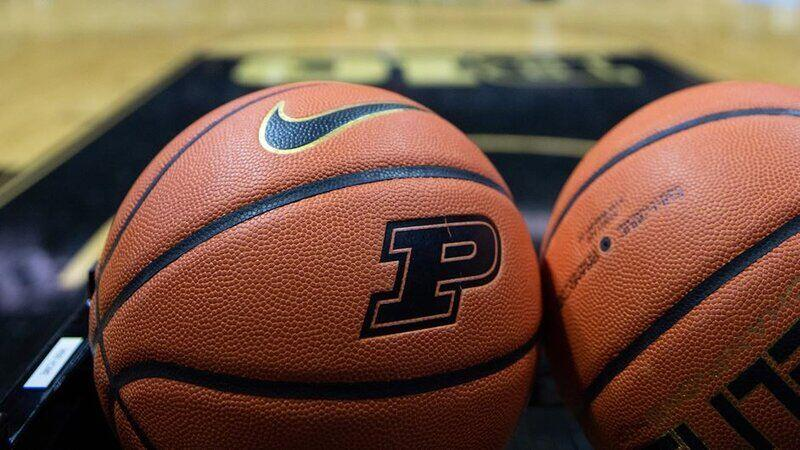

Sowinski Website
Services Offered by Michael and Michelle's March Madness
Contact Us Here
At Michael and Michelle's March Madness, we offer a multitide of services to our customers. Some of these include shoe cleaning year round, game predictions for march madness, and basketball customization with team logos!
Shoe Cleaning
Shoe Cleaning is a service offered at Micheal and Michelle's March Madness, because we believe that if you want to live out your dream and play basketball, quality shoe care is paramount in achieving this goal. We offer shoe cleaning year round, but during March Madness, we offer 50% off cleaning on shoes. For children under 8, we have free cleaning, because basketball must start young! Along with this, your first time getting your shoes cleaned is free, so you can test out how you like it before you even pay a dime. Having clean and ready to go shoes is an important piece in keeping you on the floor looking as good as possible.
Game Predictions
For March Madness, we have predictions for each round of games available the day before the games begin. Obviously we are no experts at basketball, but we want to lend a helping hand to those first time bracket makers and offer some advice on what we believe the outcome of each game will be! March Madness is always more fun when everyone fills out a bracket, so we want want everyone to have information and get their bracket filled out in time!
Basketball Customization

Year round, we offer customization for basketballs. We want kids to be able to put whatever they want on a basketball, so that they can personalize it for themselves. The ball is sure to go in the hoop more if its personally customized for yourself. Some examples of this would include but not be limited to
- Team Logos
- Player Pictures
- Names
- Quotes
Many customers over the years have gotten customized basketballs for
Check out some 2021 March Madness highlights
Download this file which shows our cleaning steps